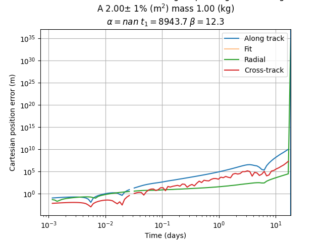

Note
Click here to download the full example code
Atmospheric drag variation¶

Out:
n_days 18
/home/danielk/IRF/IRF_GITLAB/SORTS/sorts/errors/atmospheric_drag.py:26: RuntimeWarning: divide by zero encountered in true_divide
normal = ecef0/n.sqrt(ecef0[0,:]**2.0+ecef0[1,:]**2.0+ecef0[2,:]**2.0)
/home/danielk/IRF/IRF_GITLAB/SORTS/sorts/errors/atmospheric_drag.py:26: RuntimeWarning: invalid value encountered in true_divide
normal = ecef0/n.sqrt(ecef0[0,:]**2.0+ecef0[1,:]**2.0+ecef0[2,:]**2.0)
1/100 done - time elapsed 0.00 h | estimated time remaining 0.00
2/100 done - time elapsed 0.00 h | estimated time remaining 0.00
3/100 done - time elapsed 0.00 h | estimated time remaining 0.00
4/100 done - time elapsed 0.00 h | estimated time remaining 0.00
/home/danielk/IRF/IRF_GITLAB/SORTS/sorts/errors/atmospheric_drag.py:25: RuntimeWarning: divide by zero encountered in true_divide
along_track=along_track/n.sqrt(along_track[0,:]**2.0+along_track[1,:]**2.0+along_track[2,:]**2.0)
/home/danielk/IRF/IRF_GITLAB/SORTS/sorts/errors/atmospheric_drag.py:29: RuntimeWarning: invalid value encountered in subtract
cross_track[0,:] = along_track[1,:]*normal[2,:] - along_track[2,:]*normal[1,:]
/home/danielk/IRF/IRF_GITLAB/SORTS/sorts/errors/atmospheric_drag.py:68: RuntimeWarning: invalid value encountered in add
err[0,:]+=n.abs(err_now[0,:]*at[0,:]+err_now[1,:]*at[1,:]+err_now[2,:]*at[2,:])**2.0
5/100 done - time elapsed 0.00 h | estimated time remaining 0.00
6/100 done - time elapsed 0.00 h | estimated time remaining 0.00
7/100 done - time elapsed 0.00 h | estimated time remaining 0.00
8/100 done - time elapsed 0.00 h | estimated time remaining 0.00
9/100 done - time elapsed 0.00 h | estimated time remaining 0.00
/home/danielk/IRF/IRF_GITLAB/SORTS/sorts/errors/atmospheric_drag.py:32: RuntimeWarning: invalid value encountered in true_divide
cross_track=cross_track/n.sqrt(cross_track[0,:]**2.0+cross_track[1,:]**2.0+cross_track[2,:]**2.0)
10/100 done - time elapsed 0.00 h | estimated time remaining 0.00
11/100 done - time elapsed 0.00 h | estimated time remaining 0.00
12/100 done - time elapsed 0.00 h | estimated time remaining 0.00
13/100 done - time elapsed 0.00 h | estimated time remaining 0.00
14/100 done - time elapsed 0.00 h | estimated time remaining 0.00
15/100 done - time elapsed 0.00 h | estimated time remaining 0.00
16/100 done - time elapsed 0.00 h | estimated time remaining 0.00
17/100 done - time elapsed 0.00 h | estimated time remaining 0.00
18/100 done - time elapsed 0.00 h | estimated time remaining 0.00
19/100 done - time elapsed 0.00 h | estimated time remaining 0.00
20/100 done - time elapsed 0.00 h | estimated time remaining 0.00
21/100 done - time elapsed 0.00 h | estimated time remaining 0.00
22/100 done - time elapsed 0.00 h | estimated time remaining 0.00
23/100 done - time elapsed 0.00 h | estimated time remaining 0.00
24/100 done - time elapsed 0.00 h | estimated time remaining 0.00
25/100 done - time elapsed 0.00 h | estimated time remaining 0.00
26/100 done - time elapsed 0.00 h | estimated time remaining 0.00
27/100 done - time elapsed 0.00 h | estimated time remaining 0.00
28/100 done - time elapsed 0.00 h | estimated time remaining 0.00
29/100 done - time elapsed 0.00 h | estimated time remaining 0.00
30/100 done - time elapsed 0.00 h | estimated time remaining 0.00
31/100 done - time elapsed 0.00 h | estimated time remaining 0.00
32/100 done - time elapsed 0.00 h | estimated time remaining 0.00
33/100 done - time elapsed 0.00 h | estimated time remaining 0.00
34/100 done - time elapsed 0.00 h | estimated time remaining 0.00
35/100 done - time elapsed 0.00 h | estimated time remaining 0.00
36/100 done - time elapsed 0.00 h | estimated time remaining 0.00
37/100 done - time elapsed 0.00 h | estimated time remaining 0.00
38/100 done - time elapsed 0.00 h | estimated time remaining 0.00
39/100 done - time elapsed 0.00 h | estimated time remaining 0.00
40/100 done - time elapsed 0.00 h | estimated time remaining 0.00
41/100 done - time elapsed 0.00 h | estimated time remaining 0.00
42/100 done - time elapsed 0.00 h | estimated time remaining 0.00
43/100 done - time elapsed 0.00 h | estimated time remaining 0.00
44/100 done - time elapsed 0.00 h | estimated time remaining 0.00
45/100 done - time elapsed 0.00 h | estimated time remaining 0.00
46/100 done - time elapsed 0.00 h | estimated time remaining 0.00
47/100 done - time elapsed 0.00 h | estimated time remaining 0.00
48/100 done - time elapsed 0.00 h | estimated time remaining 0.00
49/100 done - time elapsed 0.00 h | estimated time remaining 0.00
50/100 done - time elapsed 0.00 h | estimated time remaining 0.00
51/100 done - time elapsed 0.00 h | estimated time remaining 0.00
52/100 done - time elapsed 0.00 h | estimated time remaining 0.00
53/100 done - time elapsed 0.00 h | estimated time remaining 0.00
54/100 done - time elapsed 0.00 h | estimated time remaining 0.00
55/100 done - time elapsed 0.00 h | estimated time remaining 0.00
56/100 done - time elapsed 0.00 h | estimated time remaining 0.00
57/100 done - time elapsed 0.00 h | estimated time remaining 0.00
58/100 done - time elapsed 0.00 h | estimated time remaining 0.00
59/100 done - time elapsed 0.00 h | estimated time remaining 0.00
60/100 done - time elapsed 0.00 h | estimated time remaining 0.00
61/100 done - time elapsed 0.00 h | estimated time remaining 0.00
62/100 done - time elapsed 0.00 h | estimated time remaining 0.00
63/100 done - time elapsed 0.00 h | estimated time remaining 0.00
64/100 done - time elapsed 0.00 h | estimated time remaining 0.00
65/100 done - time elapsed 0.00 h | estimated time remaining 0.00
66/100 done - time elapsed 0.00 h | estimated time remaining 0.00
67/100 done - time elapsed 0.00 h | estimated time remaining 0.00
68/100 done - time elapsed 0.00 h | estimated time remaining 0.00
69/100 done - time elapsed 0.00 h | estimated time remaining 0.00
70/100 done - time elapsed 0.00 h | estimated time remaining 0.00
71/100 done - time elapsed 0.00 h | estimated time remaining 0.00
72/100 done - time elapsed 0.00 h | estimated time remaining 0.00
73/100 done - time elapsed 0.00 h | estimated time remaining 0.00
74/100 done - time elapsed 0.00 h | estimated time remaining 0.00
75/100 done - time elapsed 0.00 h | estimated time remaining 0.00
76/100 done - time elapsed 0.00 h | estimated time remaining 0.00
77/100 done - time elapsed 0.00 h | estimated time remaining 0.00
78/100 done - time elapsed 0.00 h | estimated time remaining 0.00
79/100 done - time elapsed 0.00 h | estimated time remaining 0.00
80/100 done - time elapsed 0.00 h | estimated time remaining 0.00
81/100 done - time elapsed 0.00 h | estimated time remaining 0.00
82/100 done - time elapsed 0.00 h | estimated time remaining 0.00
83/100 done - time elapsed 0.00 h | estimated time remaining 0.00
84/100 done - time elapsed 0.00 h | estimated time remaining 0.00
85/100 done - time elapsed 0.00 h | estimated time remaining 0.00
86/100 done - time elapsed 0.00 h | estimated time remaining 0.00
87/100 done - time elapsed 0.00 h | estimated time remaining 0.00
88/100 done - time elapsed 0.00 h | estimated time remaining 0.00
89/100 done - time elapsed 0.00 h | estimated time remaining 0.00
90/100 done - time elapsed 0.00 h | estimated time remaining 0.00
91/100 done - time elapsed 0.00 h | estimated time remaining 0.00
92/100 done - time elapsed 0.00 h | estimated time remaining 0.00
93/100 done - time elapsed 0.00 h | estimated time remaining 0.00
94/100 done - time elapsed 0.00 h | estimated time remaining 0.00
95/100 done - time elapsed 0.00 h | estimated time remaining 0.00
96/100 done - time elapsed 0.00 h | estimated time remaining 0.00
97/100 done - time elapsed 0.00 h | estimated time remaining 0.00
98/100 done - time elapsed 0.00 h | estimated time remaining 0.00
99/100 done - time elapsed 0.00 h | estimated time remaining 0.00
100/100 done - time elapsed 0.00 h | estimated time remaining 0.00
/home/danielk/IRF/IRF_GITLAB/SORTS/sorts/errors/atmospheric_drag.py:108: UserWarning: Attempted to set non-positive left xlim on a log-scaled axis.
Invalid limit will be ignored.
plt.xlim([0,n.max(t)/24.0/3600.0])
import pathlib
import numpy as np
import matplotlib.pyplot as plt
from astropy.time import Time
import sorts
obj = sorts.SpaceObject(
sorts.propagator.SGP4,
propagator_options = dict(
settings=dict(
in_frame='GCRS',
out_frame='ITRS',
),
),
a = 6800e3,
e = 0.0,
i = 69,
raan = 0,
aop = 0,
mu0 = 0,
epoch = Time(57125.7729, format='mjd'),
parameters = dict(
A = 2.0,
)
)
hour0, offset, t1, alpha = sorts.errors.atmospheric_drag.atmospheric_errors(obj, plot=True)
plt.show()
Total running time of the script: ( 0 minutes 16.124 seconds)